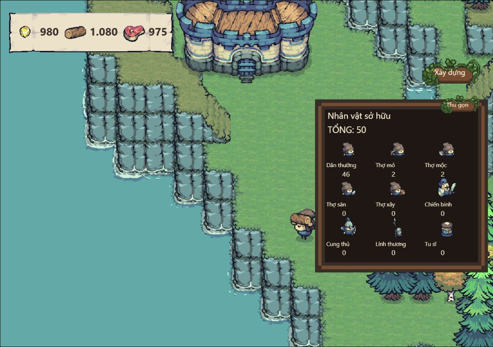

Gầy dựng
Từ thành chính đến những công trình phục vụ cuộc sống của dân làng.
XÂY DỰNG · QUẢN LÝ · BẢO VỆ
Gầy dựng cuộc sống, chăm lo dân làng và bảo vệ nơi mình gọi là nhà. Khám phá thế giới Giữ Làng trên máy tính Windows.
Tải Giữ LàngTrang tải đang được chuẩn bị. Chưa có bản phát hành công khai được xác minh.

Từ thành chính đến những công trình phục vụ cuộc sống của dân làng.
Phân công người làm, khai thác tài nguyên và duy trì nguồn lương thực.
Tổ chức lực lượng để bảo vệ vùng đất và thành quả của bạn.
BẮT ĐẦU TỪ ĐÂY
Chọn bộ cài cho lần đầu sử dụng. Thông tin tải chỉ được bật khi có bản phát hành đã xác minh.
Bản dành cho Windows
Bộ cài và bản chạy trực tiếp sẽ xuất hiện tại đây sau khi hoàn tất kiểm tra.
Bộ cài Windows Bản chạy trực tiếp (.zip)Chưa có tệp tải xuống.
Chi tiết phiên bản và mã kiểm tra SHA-256 ↗BA BƯỚC ĐƠN GIẢN
Khi bản phát hành sẵn sàng, tải bộ cài từ nút bên trên. Kiểm tra tên tệp và mã SHA-256 ở trang phiên bản.
Đóng game trước khi cài hoặc nâng cấp. Làm theo hướng dẫn của bộ cài và kiểm tra nguồn phát hành nếu Windows đưa ra cảnh báo.
Mở game từ lối tắt sau khi cài. Hướng dẫn cập nhật và vị trí lưu dữ liệu sẽ được ghi trong thông tin từng phiên bản.
TRƯỚC KHI BẮT ĐẦU
Chưa có bản phát hành công khai được xác minh. Nút tải được giữ ở trạng thái chờ để không dẫn bạn đến tệp thiếu hoặc bản chưa kiểm tra.
Trang này kiểm tra thông tin phát hành khi bạn mở trang. Cơ chế kiểm tra phiên bản bên trong game sẽ được mô tả theo bản Windows thực tế; không tự ý cài cập nhật khi bạn đang chơi.
Bản Windows đang được chuẩn bị cho Windows 10/11 64-bit, cần .NET Framework 4.8 và Microsoft Edge WebView2 Runtime. Node.js được đóng gói cùng game. Cấu hình phần cứng và dung lượng cuối cùng sẽ được công bố sau khi kiểm thử.
Không tắt phần mềm bảo vệ hoặc bỏ qua cảnh báo một cách tự động. Kiểm tra đúng nguồn tải và đối chiếu mã SHA-256 của tệp. Nếu vẫn chưa chắc chắn, dừng cài đặt.